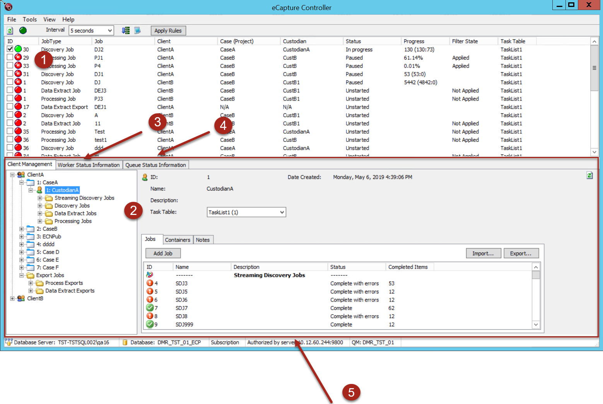

Overview: eCapture Controller
The Controller serves as a command center where several
different job types (Discovery, Data Extract, Processing, and Export)
can be created, edited, monitored, assigned priorities, and deleted with
ease.
The Controller user interface is designed for viewing
the status of all the Workers that are actively connected to the database. The Workers perform discovery and processing in addition
to other job functions. View all tasks that are currently running as well
as tasks that are waiting in the queue.
eCapture Controller Layout
The Controller is organized into panes and tabs.

- Job Queue Pane - Displays a list of jobs and their status.
- Client Management Tree View and Status and Summary Panel - Displays clients and their cases (projects), custodians, and jobs (organized by job type).
- Worker Status Information Tab and Pane - Displays the registered and active workers
- Queue Status Information Tab and Pane - Displays the queued and active tasks by Task Table.
- Controller Status Bar - Displays database, subscription, and user information.
The following sections outline each of the various areas of the Controller user interface and provide links to topics related to the specific tasks performed in the application.